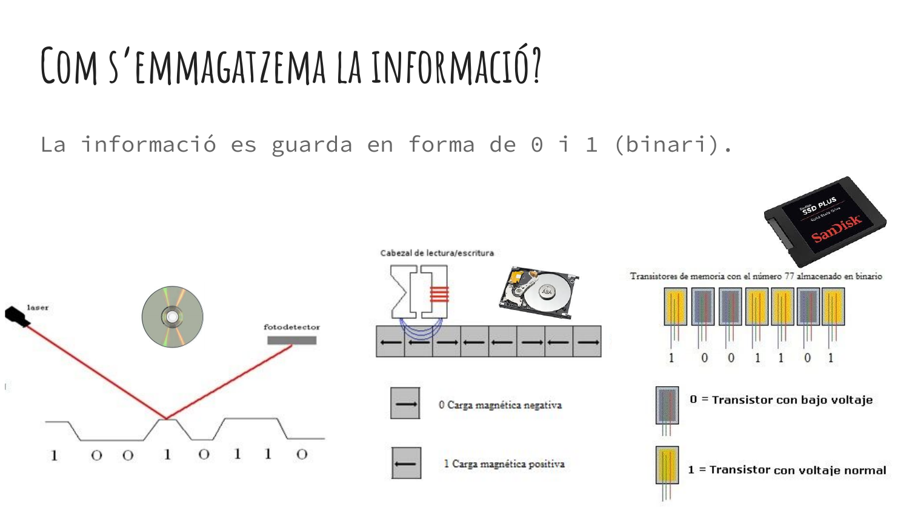
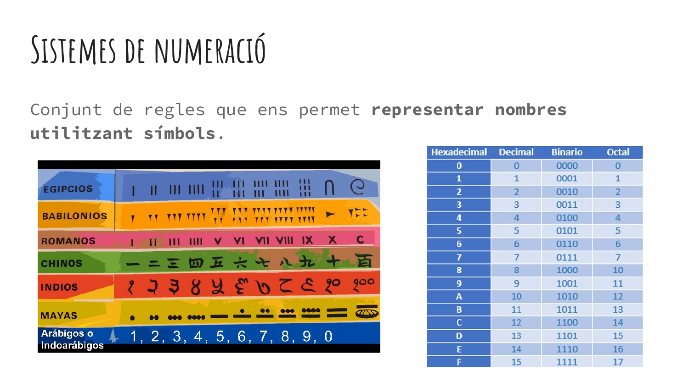
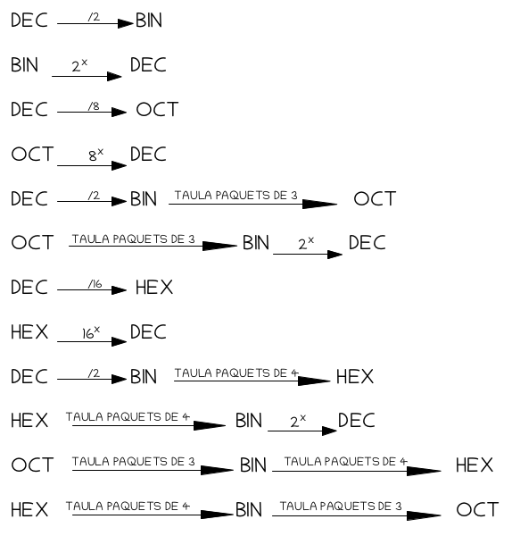
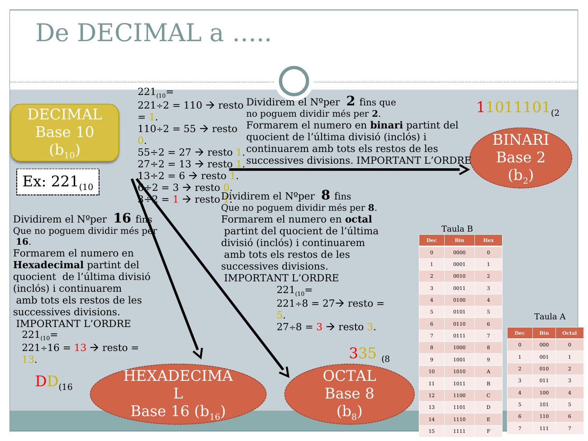
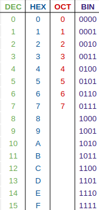
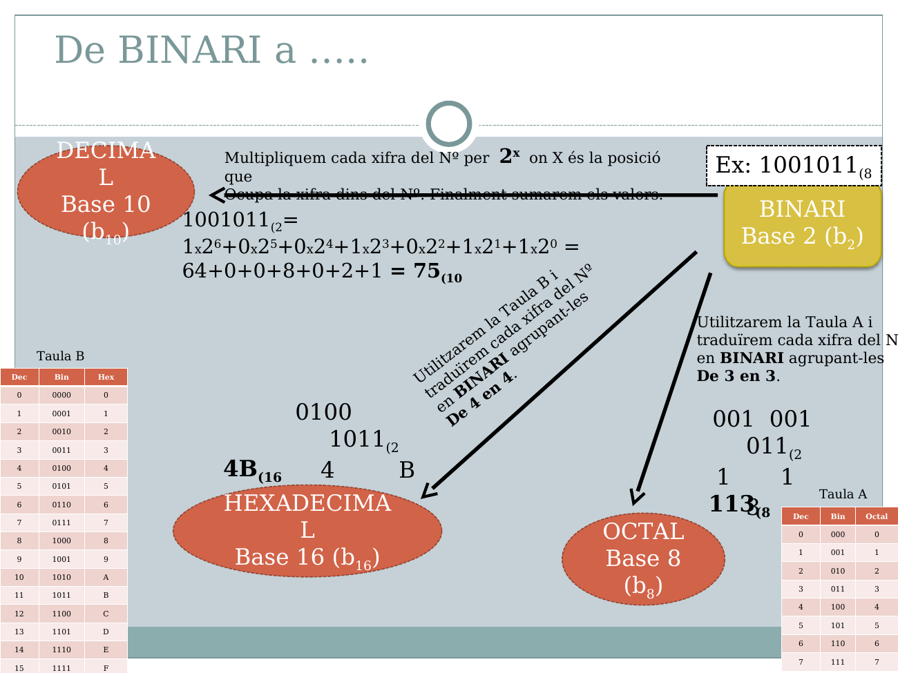
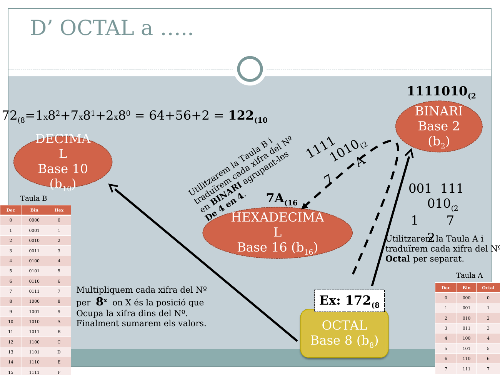
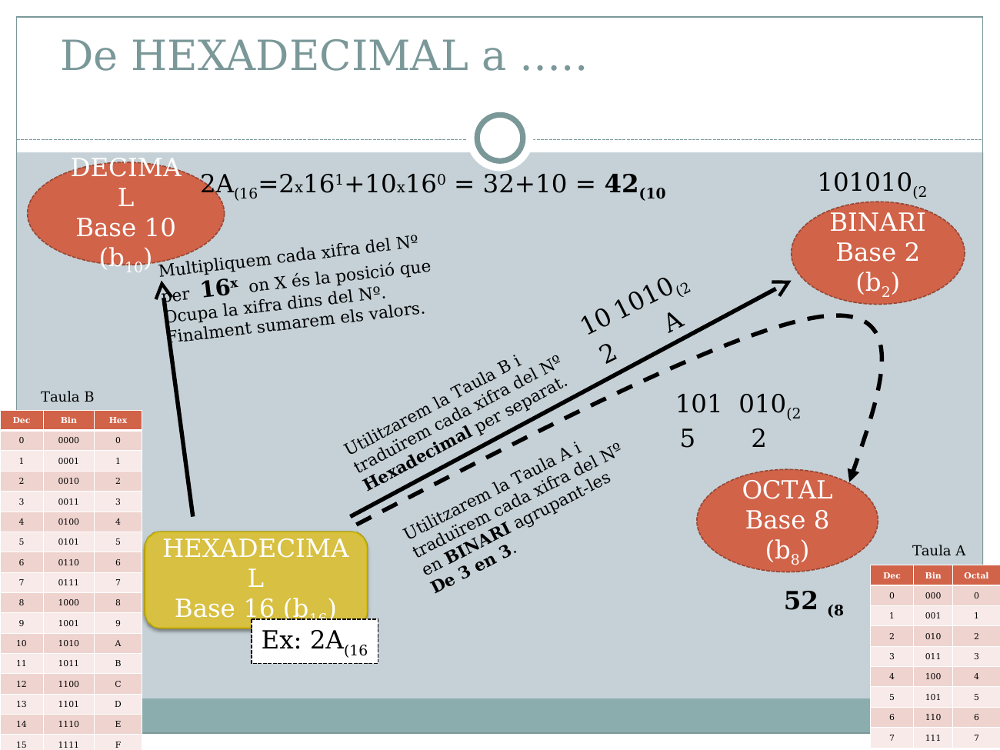

Tema 1.2: Sistemes de numeració i codificació de la informació
Criteris 1.1 i 1.2 · Activitat A2 · 12 h. En acabar sabreu passar nombres entre decimal, binari, octal i hexadecimal (també amb decimals), fer les quatre operacions en binari, representar negatius amb Ca2 i calcular mides d'informació.
En Disquet diu: Per dins jo només soc una pila de 0 i 1 magnetitzats en un plàstic rodó. Si enteneu bé aquest tema, enteneu exactament com es guarda qualsevol informació a dins meu... i a dins de qualsevol SSD modern!
1. Per què codifiquem?
Un ordinador només distingeix dos estats físics (hi passa corrent o no, un condensador carregat o no). Els representem amb 0 i 1: un bit. Tot el que guarda (nombres, text, imatges, so) s'ha de convertir a bits: això és codificar.
| Informació | Com es codifica |
|---|---|
| Text | Cada caràcter té un número (ASCII, Unicode). |
| Imatge | Quadrícula de píxels; cada píxel, uns números de color. |
| So | Mostreig: mesures del senyal molts cops per segon. |

2. Sistemes de numeració posicionals

En un sistema posicional, el valor d'un dígit depèn del símbol i de la posició: cada posició val una potència de la base (quants símbols diferents hi ha).
| Sistema | Base | Símbols | Ús |
|---|---|---|---|
| Decimal | 10 | 0–9 | Vida quotidiana |
| Binari | 2 | 0, 1 | Maquinari |
| Octal | 8 | 0–7 | Permisos Linux (chmod 755) |
| Hexadecimal | 16 | 0–9, A–F | Colors, adreces MAC, memòria |
En decimal: 234 = 2·10² + 3·10¹ + 4·10⁰ = 200 + 30 + 4. La mateixa idea serveix per a qualsevol base.
101 decimal amb binari, escrivim la base com a subíndex: 101₂ = 5₁₀. En hexadecimal, A=10, B=11, C=12, D=13, E=14, F=15.3. Conversions entre sistemes
Hi ha dues famílies de mètodes: aritmètics (pesos i divisions) i via binari (agrupar bits). Tria sempre el més curt; per comprovar, torna al decimal.


3.1 Decimal → binari (dividint entre 2)
45 : 2 = 22 r 1 ↑
22 : 2 = 11 r 0 |
11 : 2 = 5 r 1 | llegim
5 : 2 = 2 r 1 | cap amunt
2 : 2 = 1 r 0 |
1 : 2 = 0 r 1 |
45₁₀ = 101101₂ (32+8+4+1 = 45)3.2 Decimal → octal
Mètode A: dividint entre 8.
1000 : 8 = 125 r 0 ↑
125 : 8 = 15 r 5 |
15 : 8 = 1 r 7 |
1 : 8 = 0 r 1 |
1000₁₀ = 1750₈Mètode B: passant a binari i fent paquets de 3 (de dreta a esquerra).
1000₁₀ = 1111101000₂ → 001 | 111 | 101 | 000 → 1 7 5 0 → 1750₈3.3 Decimal → hexadecimal
Mètode A: dividint entre 16 (els residus 10–15 s'escriuen A–F).
1000 : 16 = 62 r 8 ↑
62 : 16 = 3 r 14 = E |
3 : 16 = 0 r 3 |
1000₁₀ = 3E8₁₆Mètode B: via binari, paquets de 4.
1000₁₀ = 1111101000₂ → 0011 | 1110 | 1000 → 3 E 8 → 3E8₁₆
#FFFFFF (255-255-255) i el negre, #000000. Sis xifres hex compacten el que en binari ocuparia 24 bits.
3.4 Binari → decimal, octal i hexadecimal
Decimal: 101101₂ = 1·32 + 0·16 + 1·8 + 1·4 + 0·2 + 1·1 = 45
Octal: 101 101 → 5 5 → 55₈
Hexadecimal: 0010 1101 → 2 D → 2D₁₆ (afegim zeros a l'esquerra)
3.5 Octal → decimal, binari i hexadecimal
Decimal: 275₈ = 2·64 + 7·8 + 5·1 = 189
Binari: cada xifra en 3 bits: 2=010, 7=111, 5=101 → 010111101₂
Hexadecimal: passem per binari i agrupem de 4: 0 1011 1101 → 0000 1011 1101 → BD₁₆
3.6 Hexadecimal → decimal, binari i octal
Decimal: 3E8₁₆ = 3·256 + 14·16 + 8·1 = 768 + 224 + 8 = 1000
Binari: cada xifra en 4 bits: 3=0011, E=1110, 8=1000 → 001111101000₂
Octal: reagrupem de 3: 001 111 101 000 → 1750₈3.7 Decimal → binari amb decimals
Es converteixen per separat: la part entera dividint entre 2, la part fraccionària multiplicant per 2: la part entera de cada resultat és el bit següent, i es continua amb la part decimal fins arribar a 0 (o fins a la precisió desitjada).
13,625₁₀
Part entera: 13 → 1101₂
Part decimal: 0,625 · 2 = 1,25 → 1
0,25 · 2 = 0,5 → 0
0,5 · 2 = 1,0 → 1 (fraccionari = 0, parem)
13,625₁₀ = 1101,101₂
Comprovació: 8+4+1 + 1/2 + 1/8 = 13 + 0,5 + 0,125 = 13,625Binari amb decimals → decimal: els bits després de la coma valen 2⁻¹, 2⁻², 2⁻³… (0,5; 0,25; 0,125…).
0.1 + 0.2 no dóna exactament 0.3 en molts llenguatges.Exercici 1 · Conversions
Mitjà · 15 minConverteix: (a) 100₁₀ → binari, octal i hexadecimal; (b) 10110110₂ → decimal, octal i hexadecimal; (c) 7A₁₆ → binari i octal; (d) 5,75₁₀ → binari.
Solució
(a) 1100100₂ = 144₈ = 64₁₆. (b) 182₁₀ = 266₈ = B6₁₆. (c) 01111010₂ = 172₈. (d) 101,11₂.4. Operacions aritmètiques en binari
4.1 Suma
| A | B | Carry entra | Suma | Carry surt |
|---|---|---|---|---|
| 0 | 0 | 0 | 0 | 0 |
| 0 | 1 | 0 | 1 | 0 |
| 1 | 0 | 0 | 1 | 0 |
| 1 | 1 | 0 | 0 | 1 |
| 1 | 1 | 1 | 1 | 1 |
1 1 1 (acarreaments)
1 0 1 1 = 11
+ 0 1 1 0 = 6
---------
1 0 0 0 1 = 174.2 Resta
| A | B | Manllevo entra | Resultat | Manllevo surt |
|---|---|---|---|---|
| 0 | 0 | 0 | 0 | 0 |
| 1 | 0 | 0 | 1 | 0 |
| 1 | 1 | 0 | 0 | 0 |
| 0 | 1 | 0 | 1 | 1 |
| 0 | 0 | 1 | 1 | 1 |
Exemple senzill (un sol manlleu):
1 1 0 1 = 13
− 0 1 0 1 = 5
---------
1 0 0 0 = 8Exemple amb manlleus en cadena — quan el veí també és un 0, el manlleu es propaga:
1000 = 8
− 0001 = 1
------
Posició 0: 0−1 → no hi arribo, manllevo: (1)0−1=1, i deixo un deute a la posició 1
Posició 1: 0−0−deute(1) → tampoc hi arribo, manllevo: (1)0−1=1, deute a la posició 2
Posició 2: 0−0−deute(1) → igual: (1)0−1=1, deute a la posició 3
Posició 3: 1−0−deute(1) = 0, ja no cal manllevar més
------
0111 = 7 (comprovació: 8−1=7 ✓)101 amb 6 bits és 000101. No es pot sumar directament un valor de 4 bits amb un de 8.4.3 Multiplicació
Es multiplica exactament com en decimal: es fa un producte parcial per cada bit del multiplicador (de dreta a esquerra) i després se sumen tots. Com que cada bit només pot ser 0 o 1, cada producte parcial és o bé tot zeros, o bé el multiplicand desplaçat cap a l'esquerra tantes posicions com indiqui el bit.
Pas a pas, 101₂ (5) × 11₂ (3):
1 0 1 = 5 (multiplicand)
× 1 1 = 3 (multiplicador)
-------
1) Bit 1 (unitats) del multiplicador = 1 → copio el multiplicand: 1 0 1
2) Bit 2 (següent) del multiplicador = 1 → el multiplicand desplaçat: 1 0 1 ·
-------
3) Sumo els productes parcials: 1 1 1 1 = 15Exemple amb un bit a 0 — quan un bit del multiplicador és 0, el producte parcial és una fila de zeros (no s'ha de sumar res, però cal deixar-hi el buit per quadrar els desplaçaments):
1 0 1 1 = 11 (multiplicand)
× 1 0 1 = 5 (multiplicador)
---------
1) Bit 1 = 1 → multiplicand: 1 0 1 1
2) Bit 2 = 0 → fila de zeros, desplaçada: 0 0 0 0 ·
3) Bit 3 = 1 → multiplicand, desplaçat: 1 0 1 1 · ·
---------
4) Sumo les tres files: 1 1 0 1 1 1 = 55Exercici 2 · Multiplica
Mitjà · 8 minCalcula 110₂ × 101₂ pas a pas (producte parcial per cada bit) i comprova el resultat en decimal.
Solució
110₂=6, 101₂=5. Productes parcials: bit1=1→110; bit2=0→0000·; bit3=1→110··. Suma: 11110₂ = 30 = 6×5 ✓.4.4 Divisió
Com la divisió llarga de tota la vida: es compara el divisor amb els bits del dividend; si hi cap, el bit del quocient és 1 i es resta; si no, 0. Després es «baixa» el bit següent.
1101 : 11 (13 : 3)
1) Prenc 11: 11 cap 1 vegada → quocient 1, resta 11 − 11 = 00
2) Baixo el 0: 00 < 11 → quocient 10
3) Baixo el 1: 001 < 11 → quocient 100, residu 1
Quocient = 100₂ (4), residu = 1 Comprovació: 4·3 + 1 = 13Exercici 3 · Operacions
Mitjà · 15 minCalcula en binari: 1101 + 1011; 10110 − 1101; 110 × 101; 11110 : 101. Comprova en decimal.
Solució
11000 (13+11=24); 1001 (22−13=9); 11110 (6·5=30); quocient 110, residu 0 (30:5=6).Exercici 4 · Bateria de pràctica
Mitjà · 20 minCalcula i comprova en decimal. Suma: (a) 010+101 (b) 001101+100101 (c) 1011011+1011010. Resta: (d) 111−101 (e) 10001−01010 (f) 11011001−10101011. Multiplicació: (g) 1001×1101 (h) 10101×101. Divisió: (i) 100010010 ÷ 1101.
Solució
(a) 111 = 7 (2+5). (b) 110010 = 50 (13+37). (c) 10110101 = 181 (91+90).(d) 010 = 2 (7−5). (e) 00111 = 7 (17−10). (f) 00101110 = 46 (217−171).
(g) 1110101 = 117 (9×13). (h) 1101001 = 105 (21×5).
(i) quocient 10101 = 21, residu 1 (274 = 13×21 + 1).
5. Nombres negatius: signe-magnitud, Ca1 i Ca2
Amb n bits cal decidir com escriure el signe. Exemple amb −5 en 8 bits (5 = 00000101):
| Representació | Com es fa | −5 | Rang (8 bits) |
|---|---|---|---|
| Signe-magnitud (SM) | Primer bit = signe (1 = negatiu); la resta, el valor. | 10000101 | −127 … +127 (dos zeros) |
| Complement a 1 (Ca1) | Invertir tots els bits. | 11111010 | −127 … +127 (dos zeros) |
| Complement a 2 (Ca2) | Invertir tots els bits i sumar 1. | 11111011 | −128 … +127 (un sol zero) |
El Ca2 és el que usen els processadors, perquè permet restar sumant: A − B = A + Ca2(B), descartant l'últim acarreament.
13 − 5 en 8 bits:
00001101 (13)
+ 11111011 (−5 en Ca2)
----------
1 00001000 → descartem l'acarreament → 00001000 = 8Exercici 5 · Ca2
Mitjà · 10 minEn 8 bits: escriu −20 en SM, Ca1 i Ca2, i calcula 20 − 35 amb Ca2.
Solució
20 = 00010100. SM: 10010100. Ca1: 11101011. Ca2: 11101100. 35 = 00100011 → −35 = 11011101; 00010100 + 11011101 = 11110001 = −15 ✔.6. Magnituds d'informació
1 byte = 8 bits. Amb n bits es poden representar 2ⁿ valors diferents: amb 8 bits, de 0 a 255.
| Binari (IEC) | Valor | Decimal (SI) | Valor |
|---|---|---|---|
| 1 KiB | 1.024 B | 1 kB | 1.000 B |
| 1 MiB | 1.024 KiB | 1 MB | 1.000 kB |
| 1 GiB | 1.024 MiB | 1 GB | 1.000 MB |
| 1 TiB | 1.024 GiB | 1 TB | 1.000 GB |
| 1 PiB | 1.024 TiB | 1 PB | 1.000 TB |
Exercici 6 · Magnituds
Mitjà · 8 minQuants MiB ocupa una foto de 6.291.456 bytes? Quants valors distints hi ha amb 12 bits?
Solució
6.291.456 / 1.048.576 = 6 MiB. 2¹² = 4.096.7. Text: ASCII
ASCII assigna un número a cada caràcter: A=65, a=97, 0=48. Un caràcter ocupa 1 byte: A = 01000001₂. La minúscula difereix de la majúscula només en el bit de valor 32. Unicode (UTF-8) amplia el conjunt per incloure accents i emojis: ç o à ocupen més d'un byte.
Exercici 7 · ASCII
Bàsic · 5 minQuin caràcter és 01000010₂ (ajuda: A=65)? Codifica «Hi» en decimal si H=72 i i=105.
Solució
01000010₂ = 66 → B. «Hi» = 72 105.Conversors per comprovar
Escriu un nombre en qualsevol de les quatre bases i en veuràs l'equivalent a les altres tres. Serveixen per comprovar els teus càlculs, no per substituir-los!
Resum visual
Resum
- Cada posició val una potència de la base.
- Cap a decimal: sumar pesos. Des de decimal: dividir entre la base (enters) o multiplicar per 2 (fracció).
- Hex i octal: agrupar bits de 4 en 4 i de 3 en 3; entre ells, passar per binari.
- Ca2 = invertir + 1; permet restar sumant.
- n bits = 2ⁿ valors; KiB = 1.024 B, kB = 1.000 B.
Vídeos i recursos
Un vídeo curt per a cada conversió, i unes eines i vídeos per repassar les operacions. Tots són els recomanats des del Moodle del mòdul.